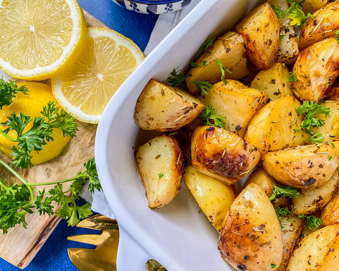

A delicious dish, that is great on its own or with a roast, is Greek lemon potatoes. It's one of my favourite dishes due to its salty and sour flavours and its crispy and soft textures. I usually eat Greek lemon potatoes with roast lamb or lemon chicken.